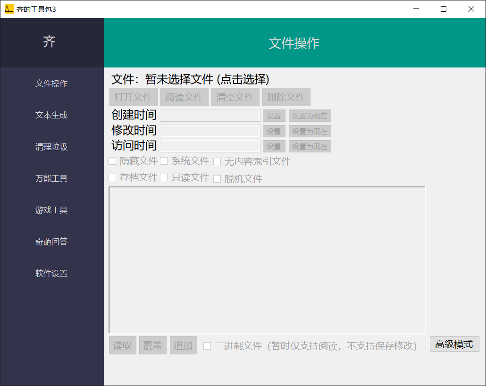

📂 文件操作 基础模式
提供基本的文本文件读写，以及文件底层属性（时间、隐藏、只读等）的快速修改功能。
高级模式
批量操作 · 高级属性 · 更多功能

📸 文件操作 · 基础模式界面预览文件加载与内容管理
基础- 打开文件：使用 Windows ShellExecute 打开文件。
- 阅读文件：尝试以Unicode读取文本并用MessageBox输出。
- 清空文件：一键清空文件全部内容。（⚠️ 数据不可恢复）。
- 删除文件：直接从磁盘移除当前文件。（⚠️ 数据不可恢复）。
时间戳快速修改
属性- 创建时间：修改文件的创建时间戳。
- 修改时间：修改文件最后修改时间戳。
- 访问时间：修改文件最后访问时间戳。
- 快捷操作：每个时间字段均支持手动输入，或一键「设为现在」同步当前系统时间。
基础属性配置
属性- 隐藏文件：使文件在资源管理器中不可见。
- 系统文件：标记为系统级文件。
- 无内容索引：禁止 Windows 搜索索引该文件。
- 存档文件：标记为已存档（默认启用）。
- 只读文件：禁止写入和修改。
- 脱机文件：标记为可脱机使用。
内容写入模式
保存- 读取：将当前文件内容加载到编辑框。
- 覆盖：用编辑框内容完全替换原文件（⚠️ 数据不可恢复）。
- 追加：将编辑框内容添加到原文件末尾。
当前模式能力边界
- 文本处理：基础模式主要针对文本文件（如 TXT、代码文件等）的常规读写。
- 二进制文件：右下角的“二进制文件”复选框仅为文件类型标识。
当前版本中，基础模式支持阅读二进制文件（如 EXE、图片等），但不支持在此模式下修改并保存它们。
使用流程
- 选择文件：点击「打开文件」按钮，选择目标文件。
- 修改属性：编辑时间字段，或勾选下方的属性复选框。
- 内容操作：在编辑区修改文本，点击「覆盖」或「追加」保存。
- 完成：文件修改即时生效。